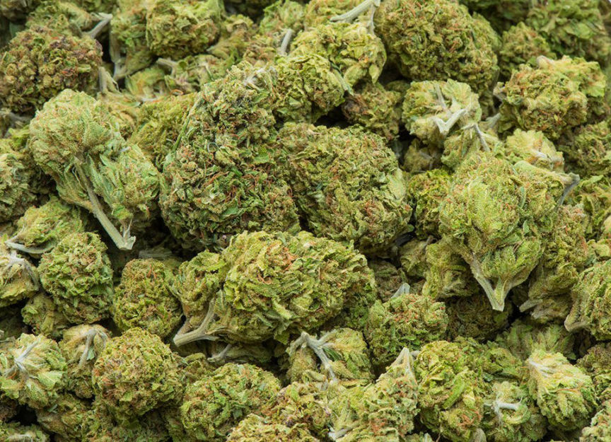
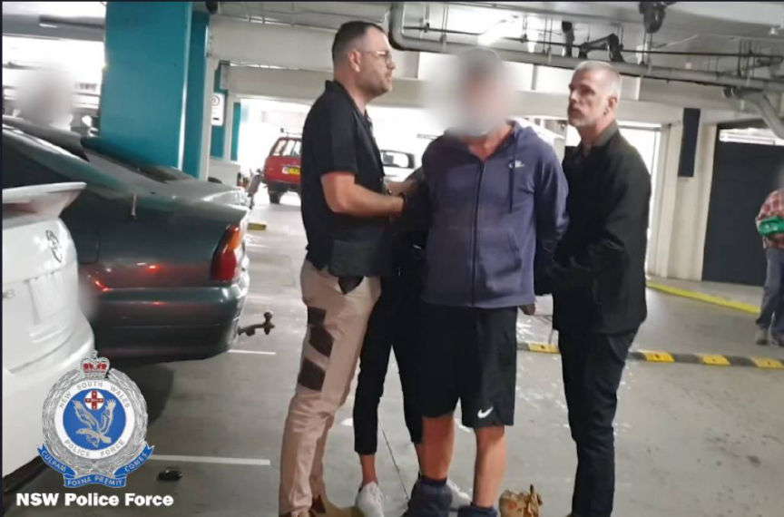
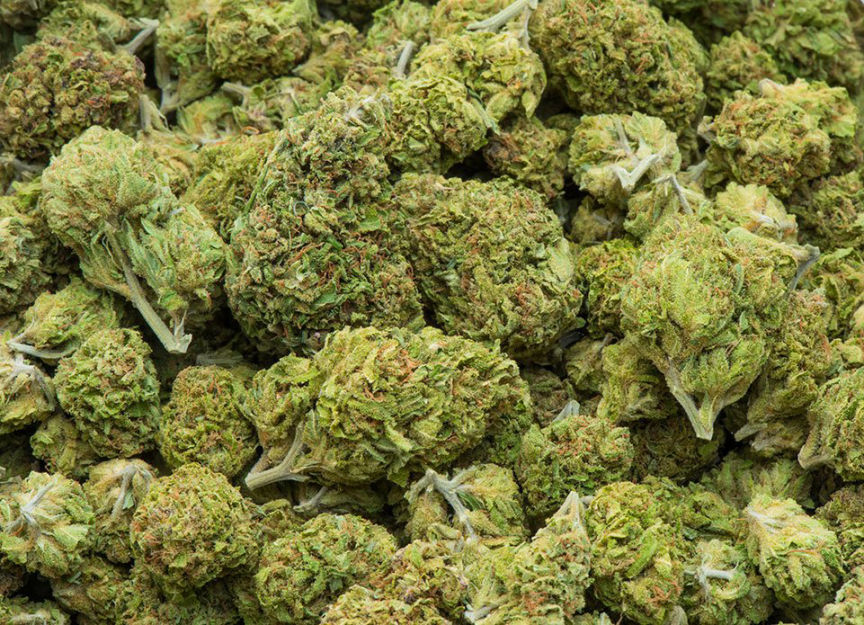
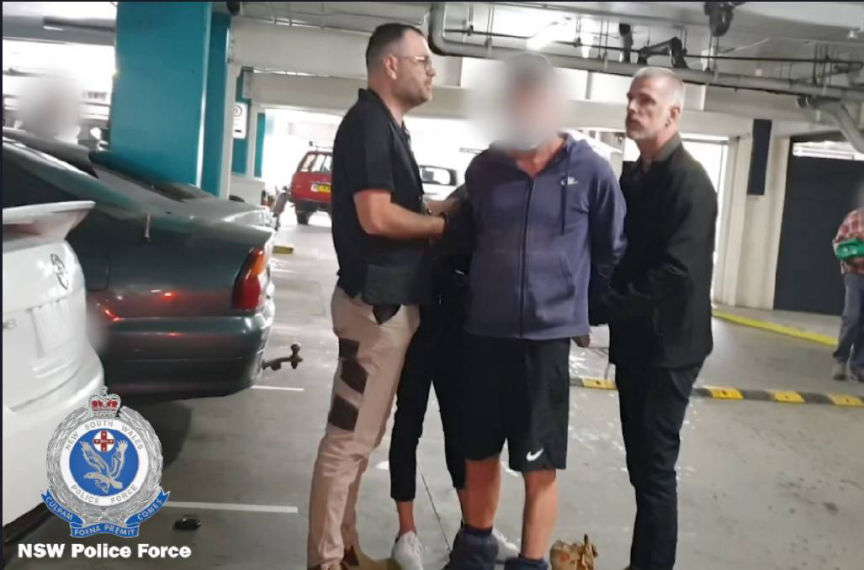

Australian Cannabis Vendor Busted
~2 min read | Published on 2023-04-29, tagged Arrested, Darkweb-Vendor using 307 words.
Police in New South Wales, Australia, arrested a man accused of distributing cannabis through the dark web.
According to a press release by New South Wales Police, 55-year-old Matthew Robert McDonald distributed cannabis through an undisclosed dark web market from at least March 2018 to April 2023.

The investigations that led to McDonald's arrest were conducted by investigators from Strike Force Presland, a task force established by the State Crime Command's Cybercrime Squad in November 2022. The task force investigates the sale and distribution of illicit drugs in NSW through the dark web.
In the course of the investigations, the investigators came across McDonald's vendor profile on an undisclosed dark web marketplace.
On April 27, 2023, following "extensive" investigations, the investigators acquired and executed search and arrest warrants against McDonald.
A search of McDonald's home resulted in the seizure of an undisclosed number of mature cannabis plants, an undisclosed quantity of cannabis, more than $2400 in cash, and $650 in crypto.
McDonald was arrested at a parking lot and detained at the Kempsey Police Station.

He was consequently charged with three counts of supplying illicit drugs, one count of cultivating a prohibited plant, and four counts of dealing with proceeds of crime.
McDonald appeared before the Kempsey Local Court on April 28. The police disclosed that McDonald fulfilled over 450 orders during his drug trafficking operation and made over $961,000.
The court released McDonald on conditional bail. He will appear at the court again on May 11.
According to a press release by New South Wales Police, 55-year-old Matthew Robert McDonald distributed cannabis through an undisclosed dark web market from at least March 2018 to April 2023.

The investigations that led to McDonald's arrest were conducted by investigators from Strike Force Presland, a task force established by the State Crime Command's Cybercrime Squad in November 2022. The task force investigates the sale and distribution of illicit drugs in NSW through the dark web.
In the course of the investigations, the investigators came across McDonald's vendor profile on an undisclosed dark web marketplace.
On April 27, 2023, following "extensive" investigations, the investigators acquired and executed search and arrest warrants against McDonald.
A search of McDonald's home resulted in the seizure of an undisclosed number of mature cannabis plants, an undisclosed quantity of cannabis, more than $2400 in cash, and $650 in crypto.
McDonald was arrested at a parking lot and detained at the Kempsey Police Station.

McDonald being arrested
He was consequently charged with three counts of supplying illicit drugs, one count of cultivating a prohibited plant, and four counts of dealing with proceeds of crime.
Quote:Cybercrime Squad Commander, Superintendent Matt Craft
Our detectives are specially trained to investigate, disrupt, and dismantle the supply of prohibited drugs, no matter how or where they are sold. We're putting people on notice, the dark web will not provide you a cloak of invisibility and anonymity to conduct any illicit sales of drugs. NSW Police will catch up to you and place you before the courts.
McDonald appeared before the Kempsey Local Court on April 28. The police disclosed that McDonald fulfilled over 450 orders during his drug trafficking operation and made over $961,000.
The court released McDonald on conditional bail. He will appear at the court again on May 11.